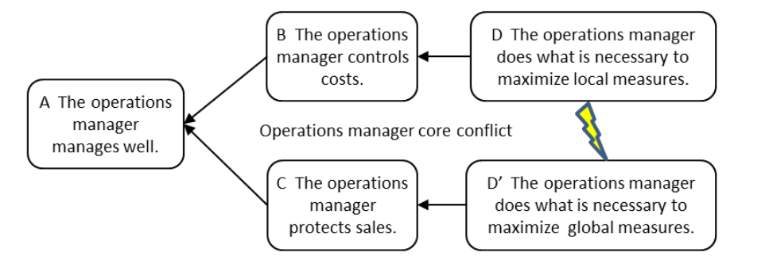

НО максимизация эффективности приводит к увеличению незавершенного производства, что увеличивает время выполнения заказа и тормозит поток, тем самым ставя под угрозу продажи. ТОС-решение этого конфликта заключается в использовании целостных правил управления цехом: барабан-буфер-веревка (упрощенно барабан-буфер-веревка) и управление буфером.

См.: традиционная философия управления производством.
#производство
Примечание АВ: эта туча актуальна для физического производства, тут есть скрытая предпосылка что незавершенное производство это “Инвестиции” и “замороженный капитал”. Для ИТ-проектов это может быть не так.
Синоним: максимизация эффективности